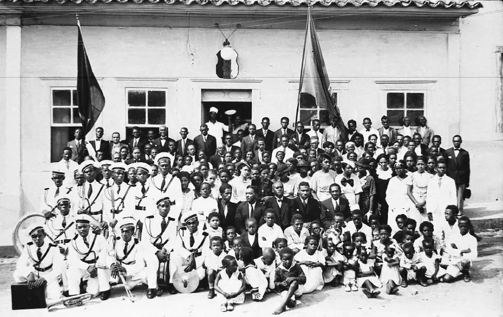
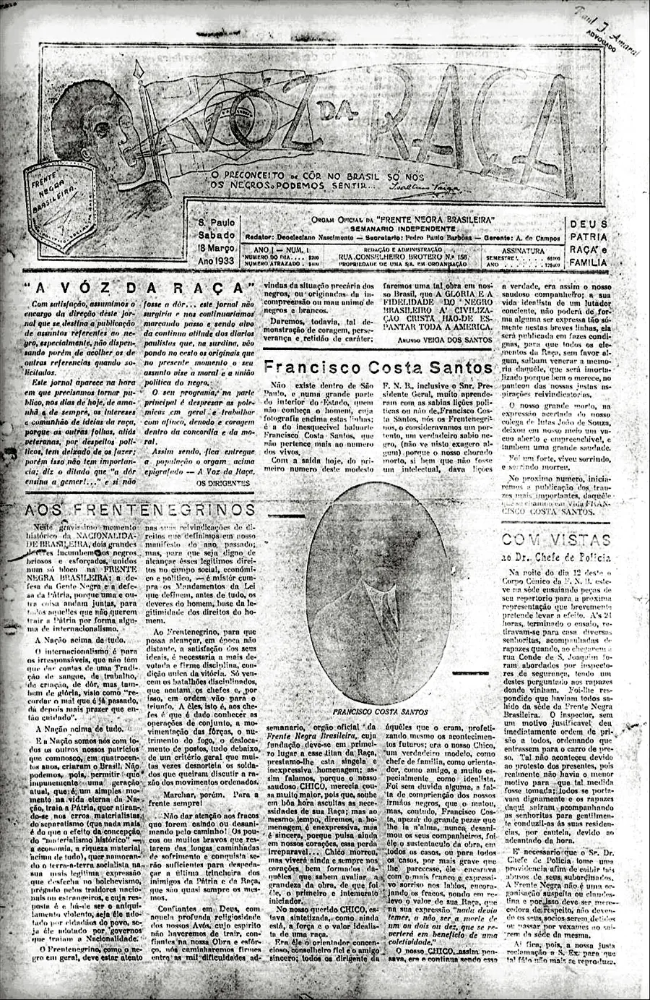
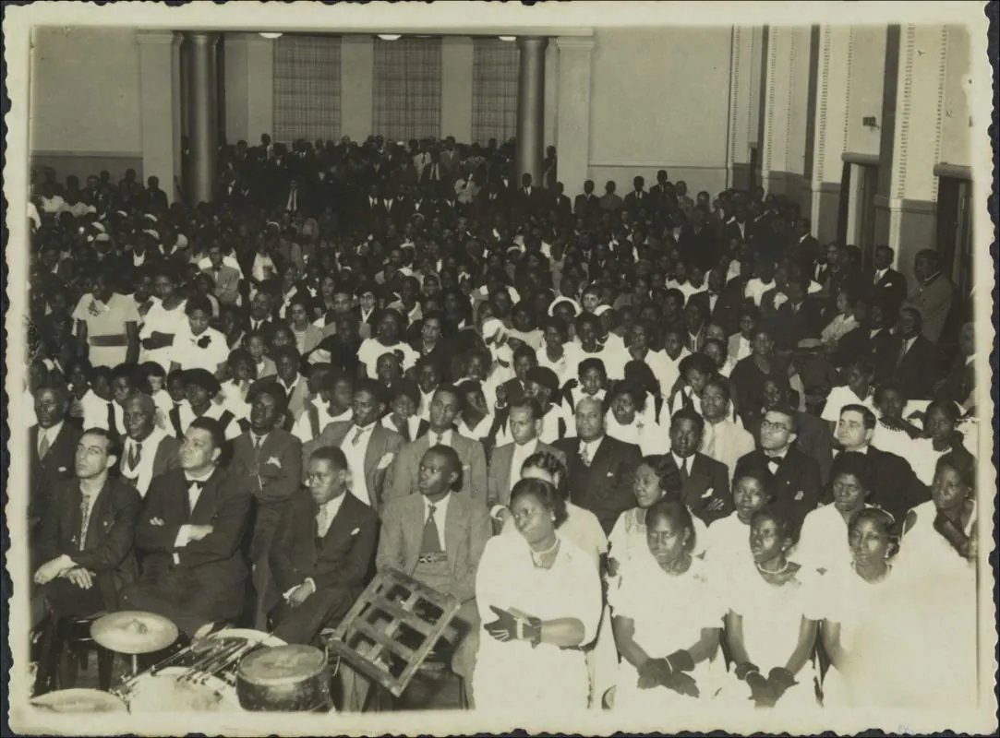
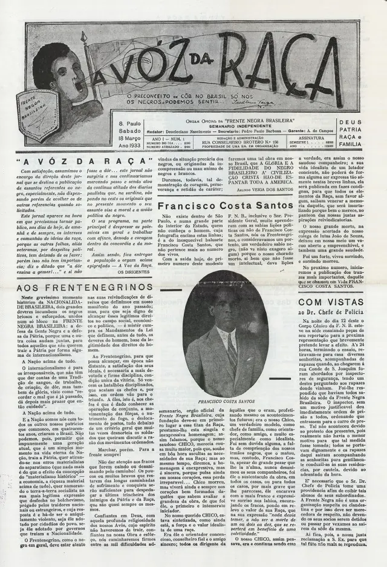
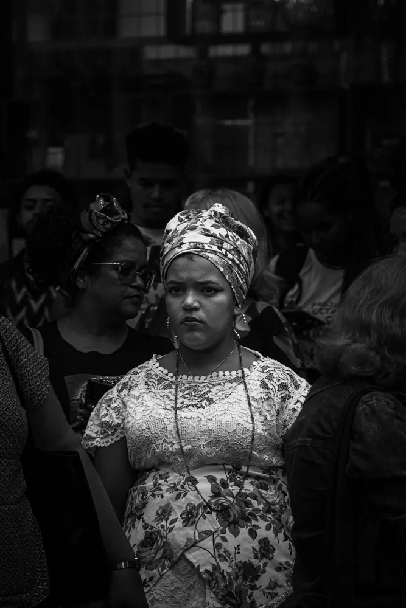
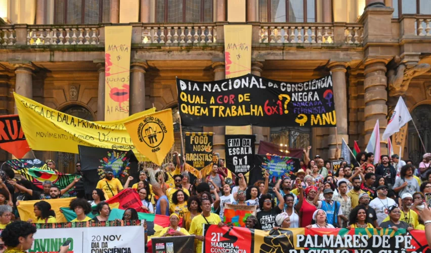

Nasce uma frente nacional
Fundada em São Paulo em 16 de setembro, a Frente Negra Brasileira articula educação, assistência, cultura e ação política contra a discriminação racial.
Memória · Dignidade · Futuro
A Frente Negra Brasileira transformou consciência em organização. Hoje, sua memória volta a ocupar o espaço público para inspirar um futuro de igualdade.
Conheça essa história ↓
Nosso compromisso
“Não existe futuro democrático sem o reconhecimento pleno da contribuição negra à história do Brasil.”
Uma plataforma de memória e mobilização dedicada à cidadania, à educação e à valorização da população negra brasileira.
Uma história que permanece
Em uma sociedade ainda marcada pelo pós-abolição, homens e mulheres negros criaram uma das organizações políticas mais importantes do país.
Fundada em São Paulo em 16 de setembro, a Frente Negra Brasileira articula educação, assistência, cultura e ação política contra a discriminação racial.
Começa a circular A Voz da Raça, jornal que registra ideias, debates, notícias e a vida associativa do movimento negro organizado.
A FNB obtém registro como partido político, levando a representação negra para o centro da disputa institucional brasileira.
O fechamento dos partidos extingue formalmente a organização. Sua rede, seus quadros e sua memória, porém, atravessam gerações.
Documentos de uma era

Primeira edição · 18 de março de 1933
Ver documento original ↗O jornal oficial da FNB circulou entre 1933 e 1937. Suas páginas oferecem um registro incontornável das disputas, conquistas e contradições do movimento negro brasileiro no período.
Explorar fontes históricas ↗O legado continua
Preservar documentos, narrativas e trajetórias que explicam a presença negra na construção do Brasil.
Transformar conhecimento histórico em repertório para escolas, lideranças e novas gerações.
Ampliar a presença negra nos espaços de decisão, com cidadania, dignidade e compromisso público.
Ontem e hoje
Do associativismo pioneiro às marchas contemporâneas, a mobilização negra permanece como força que amplia direitos e transforma o Brasil.




O próximo capítulo é coletivo
Conheça, compartilhe e ajude a manter viva uma trajetória fundamental para a democracia brasileira.
Entrar em contato ↗